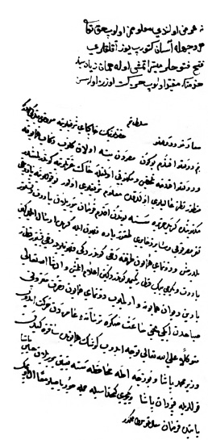

Belge 18: Veziriâzam ‘arzı
Belge 18
“Sa’âdetlü ve devletlü sultanım hazretlerinin hâkipây-i şerîflerine ma’rûz-i bendegî budur ki:
Benim devletlü efendim, bugün Mısır’dan yine ulak gelib rikâb-i hümâyûna ve devletlü efendime telhîs ve mektûbu olmağla hâk-i ‘izzetlerine gönderilmişdir, manzûr-i nazar-i ‘alîleri oldukda ma’lûm-i şerîfleri olur; bu kullarına yazdığı mektûbunda Girit cezîresine bundan akdem fermân buyrulan barut ve beş yüz nefer Mısır kulu vesâir zehâyiri dokuz pâre kalyon ile Girit’e irsâl eylediğin bildirmiş ve donanma-yi hümâyûn tarafına dahi gönderdiği kalyonlarıyla dahi beş yüz kantar barut ve yirmi bin kantar peksimet gönderdiğin i’lâm eylemiş ve inşallâhu ta’âlâ yarın Dîvân-i Hümâyûna varılmayub donanma-yi hümâyûn nusret-makrûnu sabahdan iki buçuk sâ’at sonra tersâne-i ‘amireden hareket idüb mütevekkilen ‘alel-lâhi ta’âlâ teveccüh idüp köşk-i hümâyûnda Sakız’a giden vezir Mehmed Paşa ve Bozca-ada muhâfazasına ta’yîn buyrulan Hüseyin Paşa kullarıyla Kapudân Paşa ve yeniçeri kethüdasıyla cümle çorbacılar ma’an el-öpmek bâbında fermân sa’âdetlü sultanımındır.”
H. H. Kösem Sultan’ın emri:
“Ne ‘arz olundu, ma’lûmumuz olub Hakk ta’âlâ her vechile âsân getürüb yüz aklıkları fetih fütûhlar müyesser itmiş ola, hemân ziyâdesiyle hidmetine mukayyed olub hareket üzere olasın.”
Yorum:
Girit seferinin (1645–1669) Osmanlı donanmasında bir değişikliğe yol açtığı, kalyonların öneminin arttığı bununla beraber “donanmanın esasını yine kadırgaların oluşturduğu” gözlenmiştir.47Venedik, İnebahtı (Lepanto, 1572) büyük savaşında kalyonlarıyla yoğun ateş gücü sayesinde zafere erişmişti. Girit seferi boyunca Venedik, İngiliz ve Hollanda kalyonlarını kiralayarak, Osmanlı donanması karşısında üstünlük sağladı. 16 Şaban 1065 (21 Haziran 1655) tarihinde Çanakkale Boğazı açıklarındaki deniz savaşında, Venedik donanmasında kalyonlar ileriye dizildi, kapudân paşa kadırgalarıyla savaşa girdi. Donanmadan dokuz gemi kaybedildi. Gerisi Sakız’a sığındı.48Bu durum karşısında Osmanlılar da süratle çok sayıda kalyon inşasına başlamıştır. 1651’de devlet birkaç kalyon satın almış ve yeni yapılan kalyonları donatmaya çalışıyordu. Bunlar Sakız’da donanmaya gönderilecekti.49Yayınladığımız 5 nolu belgede, Bahçekapı’da denize indirilen kalyondan söz edilmektedir. Burada yayınladığımız belge gösterir ki, genişliği dolayısıyla kalyonların erzak, mühimmat ve asker nakliyatında ne kadar önemli rol oynadığı ortadadır.
Belgenin tarihine gelince, adları geçen kişileri teşhis yoluyla bunu belirlemeye çalışacağız.
Belgede “Sakız’a giden vezir Mehmed Paşa”dan söz edilir. Vekâyinâme 1061/1651 başında kapudân paşanın Girit’ten Sakız Adası’na döndüğü ve Mısır’dan gönderilen 10 kalyonun Hanya’ya zahire getirdiği haberi verilmektedir. Aynı şeyleri okuduğunuz belge 1651 kışına veya bahar aylarına rastlar. “Bozca-Ada muhâfazasına ta’yîn buyrulan Hüseyin Paşa” IV. Murad ve Sultan İbrahim dönemlerinde iki kez deryâ kapdanı atanan ünlü Hüseyin Paşa olabilir. Yine vekâyinâmede50 Sakız’daki donanmaya kalyonların gönderilmesine dair bir haber buluyoruz.51Venedik donanmasının Bozca-Ada’yı işgal etme girişimi (1646 sonbahar) üzerine adayı koruma gereği anlaşılmış bulunuyordu.
47 İ. Bostan, Osmanlı Denizciliği, İstanbul, 2006; s. 186, donanmada kalyona geçme hakkında 1648 kararı için bkz. ibid, s. 187-200.
48 Nâimâ, V, s. 106-107.
49 Nâimâ, V, s. 50.
50 Nâimâ, V, s. 45.
51 Nâimâ, V, s. 50; Venedik kaynakları için bkz. N. Jorga Osmanlı İmparatorluğu Tarihi, çev. N. Epçeli, IV, s. 55.